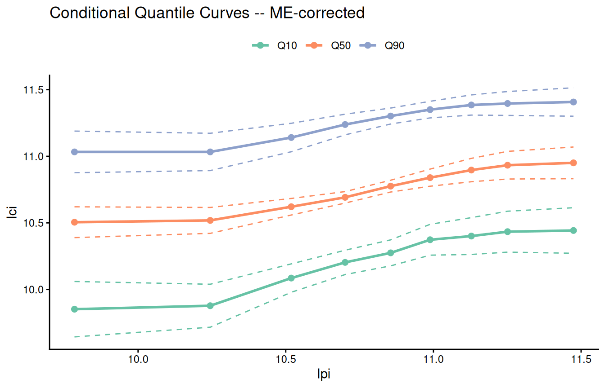
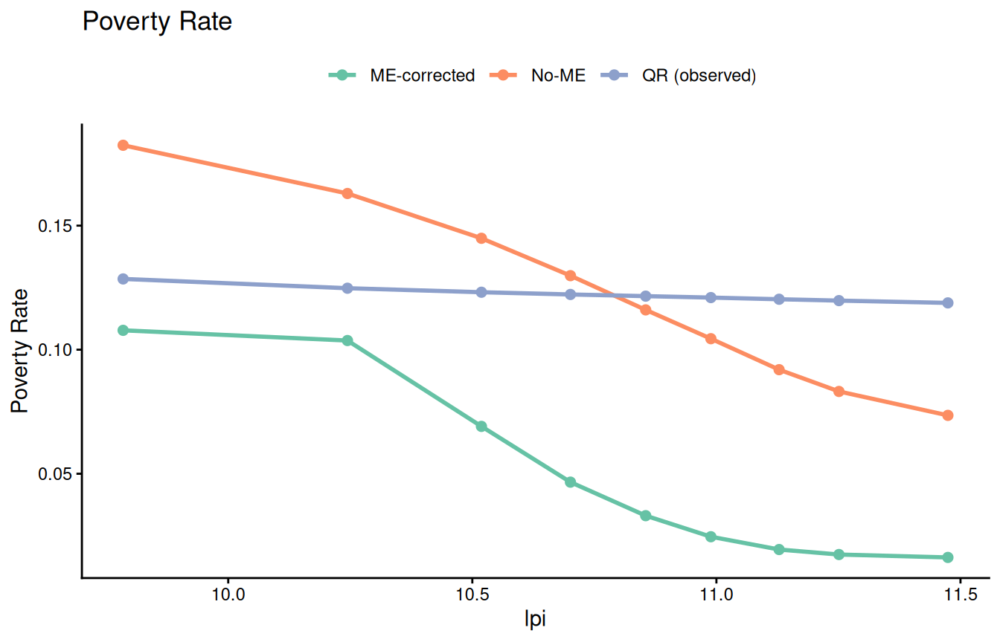

library(qrme)
library(ggplot2)
dim(nlsy97)
#> [1] 1096 16
summary(nlsy97[, c("lci", "lpi", "ageC_97", "ageF", "educF")])
#> lci lpi ageC_97 ageF
#> Min. : 2.485 Min. : 1.085 Min. :12.00 Min. :23.00
#> 1st Qu.:10.309 1st Qu.:10.391 1st Qu.:13.00 1st Qu.:37.00
#> Median :10.758 Median :10.855 Median :14.00 Median :41.00
#> Mean :10.663 Mean :10.644 Mean :14.21 Mean :41.52
#> 3rd Qu.:11.156 3rd Qu.:11.212 3rd Qu.:15.00 3rd Qu.:45.00
#> Max. :12.267 Max. :12.515 Max. :17.00 Max. :67.00
#> educF
#> Min. : 2.00
#> 1st Qu.:12.00
#> Median :13.00
#> Mean :13.32
#> 3rd Qu.:16.00
#> Max. :20.00Two-Sided Measurement Error: Intergenerational Income Mobility
2026-05-18
Source:vignettes/tsme-application.qmd
Overview
This vignette illustrates tsme(), the two-sided measurement error estimator in the qrme package, using the intergenerational income mobility application from Callaway, Li, Murtazashvili, and Tsyawo (2026). The key idea is that when both the outcome (child income) and a continuous treatment (father’s income) are measured with error, standard quantile regression estimates of the conditional distribution of child income given father’s income are biased. tsme() corrects this bias by:
- Running
qrme()separately for the child income and father income equations to recover ME-corrected conditional quantile functions. - Linking the two via a copula to recover the joint distribution of latent (true) child and father incomes.
- Deriving mobility statistics from the corrected joint distribution.
The NLSY97 data
The nlsy97 dataset contains 1,066 father-son pairs from the National Longitudinal Survey of Youth 1997. Key variables:
| Variable | Description |
|---|---|
lci |
Log son’s annual income |
lpi |
Log father’s annual income |
ageC_97 |
Son’s age in 1997 |
ageF |
Father’s age |
educF |
Father’s years of schooling |
Raw (observed) incomes are measured with substantial error — NLSY97 income data are self-reported and subject to recall error, rounding, and misclassification.
Fitting the model with tsme()
The call below reproduces the main specification from the paper: a Frank copula, Laplace measurement error distribution, and one mixture component for each equation. Age controls enter both the child income and father income equations.
tau <- seq(0.02, 0.98, length.out = 25)
t_values <- quantile(nlsy97$lpi, probs = seq(0.1, 0.9, by = 0.1))
set.seed(51526)
fit <- tsme(
data = nlsy97,
y_formula = lci ~ ageC_97 + ageF,
t_formula = lpi ~ ageC_97 + ageF,
tau = tau,
t_values = t_values,
y_n_mix = 1L,
t_n_mix = 1L,
copula = "frank",
me_distribution = "laplace",
conv_patience = 1L,
n_copula_me_draws = 1000L,
mcmc_draws = 400L,
mcmc_burn_in = 20L,
conv_criterion = "params",
tol = 1e-2,
max_em_iters = 100L,
se = TRUE,
n_boot = 200L,
n_cores = 10L,
boot_n_copula_me_draws = 500L,
boot_mcmc_draws = 200L,
boot_mcmc_burn_in = 10L,
boot_tol = 5e-2,
verbose = 2
)This call takes roughly 90 minutes with 10 cores. For the remainder of this vignette we load the pre-computed result bundled with the package:
fit <- nlsy97_tsme_fitPrinting the result
print() shows the copula parameter and measurement error distribution for each equation, comparing the ME-corrected estimator against a no-ME benchmark:
print(fit)
#> Two-Sided Measurement Error Model (tsme)
#> ------------------------------------------
#> Outcome: lci ~ ageC_97 + ageF
#> Treatment: lpi ~ ageC_97 + ageF
#>
#> Copula: frank theta(ME) = 2.1152 (SE 0.6443) | theta(No-ME) = 1.3026 (SE 0.2153)
#>
#> ME parameters:
#> Y (laplace): sigma = 0.4980 (SE 0.0057)
#> T (laplace): sigma = 0.4837 (SE 0.0075)
#>
#> Spearman's rho: ME = 0.3664 (SE 0.0798) | No-ME = 0.2295 (SE 0.0330) | Obs = 0.2085 (SE 0.0289)summary() adds the ME-corrected transition matrix and upward mobility estimates:
summary(fit)
#> Two-Sided Measurement Error Model (tsme)
#> ------------------------------------------
#> Outcome: lci ~ ageC_97 + ageF
#> Treatment: lpi ~ ageC_97 + ageF
#>
#> Copula: frank theta(ME) = 2.1152 (SE 0.6443) | theta(No-ME) = 1.3026 (SE 0.2153)
#>
#> ME parameters:
#> Y (laplace): sigma = 0.4980 (SE 0.0057)
#> T (laplace): sigma = 0.4837 (SE 0.0075)
#>
#> Spearman's rho: ME = 0.3664 (SE 0.0798) | No-ME = 0.2295 (SE 0.0330) | Obs = 0.2085 (SE 0.0289)
#>
#> Upward Mobility:
#> ME ME_se NoME NoME_se Observed Obs_se
#> Q1 (bottom) 0.7836 0.0211 0.8264 0.0084 0.8303 0.0181
#> Q2 0.5756 0.0112 0.5897 0.0058 0.5725 0.0253
#> Q3 0.4218 0.0119 0.4054 0.0060 0.3868 0.0288
#> Q4 (top) 0.2071 0.0207 0.1771 0.0081 0.1667 0.0248
#>
#> Transition Matrix (ME-corrected, rows=father, cols=son):
#> Q1 Q2 Q3 Q4
#> Q1 (bottom) 0.4231 0.2809 0.1848 0.1113
#> Q2 0.2802 0.2889 0.2479 0.1830
#> Q3 0.1836 0.2476 0.2865 0.2823
#> Q4 (top) 0.1131 0.1826 0.2808 0.4235Measurement error parameters
The EM algorithm estimates the ME standard deviation for each equation. With a Laplace distribution and one component, the key parameter is :
cat(sprintf(
"Child income equation — sigma_V = %.4f (SE = %.4f)\n",
fit$me_qyx$sig, fit$me_qyx$sig_se
))
#> Child income equation — sigma_V = 0.4980 (SE = 0.0057)
cat(sprintf(
"Father income equation — sigma_V = %.4f (SE = %.4f)\n",
fit$me_qtx$sig, fit$me_qtx$sig_se
))
#> Father income equation — sigma_V = 0.4837 (SE = 0.0075)Both equations show substantial measurement error: the ME standard deviation is roughly 0.50 log-income units (~50% in levels), indicating that self-reported income data are quite noisy.
Copula and rank correlation
The Frank copula parameter and the implied Spearman rank correlation summarise intergenerational dependence:
cat(sprintf(
"Frank copula parameter: ME = %.3f (SE = %.3f) No-ME = %.3f\n",
fit$me_cop_param, fit$me_cop_param_se, fit$nome_cop_param
))
#> Frank copula parameter: ME = 2.115 (SE = 0.644) No-ME = 1.303
cat(sprintf(
"Spearman rho: ME = %.4f (SE = %.4f) No-ME = %.4f Observed = %.4f\n",
fit$me_spearman, fit$me_spearman_se,
fit$nome_spearman, fit$obs_spearman
))
#> Spearman rho: ME = 0.3664 (SE = 0.0798) No-ME = 0.2295 Observed = 0.2085The ME-corrected Spearman rank correlation (0.37) is substantially larger than the naive observed correlation (0.21), indicating that measurement error causes a significant downward bias in the apparent degree of intergenerational persistence.
Transition matrix
The 4×4 transition matrix gives the probability that a son from father’s income quartile ends up in son’s income quartile :
quart_labels <- c("Q1 (bottom)", "Q2", "Q3", "Q4 (top)")
tmat_tbl <- as.data.frame(round(fit$me_tmat, 3))
colnames(tmat_tbl) <- quart_labels
rownames(tmat_tbl) <- quart_labels
print(tmat_tbl)
#> Q1 (bottom) Q2 Q3 Q4 (top)
#> Q1 (bottom) 0.113 0.183 0.281 0.424
#> Q2 0.184 0.248 0.287 0.282
#> Q3 0.280 0.289 0.248 0.183
#> Q4 (top) 0.423 0.281 0.185 0.111The diagonal of the ME-corrected matrix is flatter than the naive observed matrix, but the off-diagonal persistence is still strong — sons of high-income fathers are substantially more likely to end up in the top quartile.
Upward mobility
Upward mobility measures the fraction of sons whose income rank exceeds their father’s, by father’s income quartile:
um_tbl <- data.frame(
`Father's quartile` = quart_labels,
`ME-corrected` = round(fit$me_up_mob, 3),
`No-ME` = round(fit$nome_up_mob, 3),
`Observed` = round(fit$obs_up_mob, 3),
check.names = FALSE
)
print(um_tbl, row.names = FALSE)
#> Father's quartile ME-corrected No-ME Observed
#> Q1 (bottom) 0.784 0.826 0.830
#> Q2 0.576 0.590 0.573
#> Q3 0.422 0.405 0.387
#> Q4 (top) 0.207 0.177 0.167Sons of fathers in the bottom income quartile have the highest probability of upward mobility, while sons of top-quartile fathers have the lowest.
Conditional quantile curves
autoplot() visualises how the conditional distribution of son’s income varies across father’s income deciles. The ME-corrected curves spread further than the naive QR curves, reflecting the attenuation bias that measurement error induces in standard QR:
autoplot(fit, type = "cond_quant", which = "me")
Poverty rates
The poverty rate is the fraction of sons below a given income threshold, conditional on father’s income decile. Setting type = "pov_rate" and which = "all" overlays all three estimators:
autoplot(fit, type = "pov_rate", which = "all", ci = FALSE)
Model selection
tsme_model_select() performs a grid search over copula families (Gaussian, Clayton, Gumbel, Frank) and ME distributions (Gaussian, Laplace) and returns AIC/BIC for each combination. This is computationally expensive; a typical call looks like:
sel <- tsme_model_select(
data = nlsy97,
y_formula = lci ~ ageC_97 + ageF,
t_formula = lpi ~ ageC_97 + ageF,
tau = tau,
t_values = t_values,
me_distribution = "laplace", # or c("gaussian", "laplace") for full grid
mcmc_draws = 400L,
mcmc_burn_in = 20L,
n_cores = 10L
)
print(sel)References
Callaway, B., Li, T., Murtazashvili, I., and Tsyawo, E. S. (2026). Distributional Effects with Two-Sided Measurement Error: An Application to Intergenerational Income Mobility. arXiv:2107.09235. doi:10.48550/arXiv.2107.09235